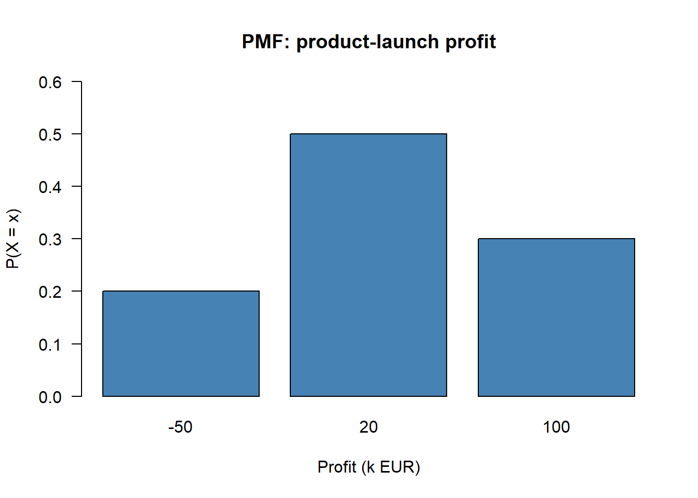
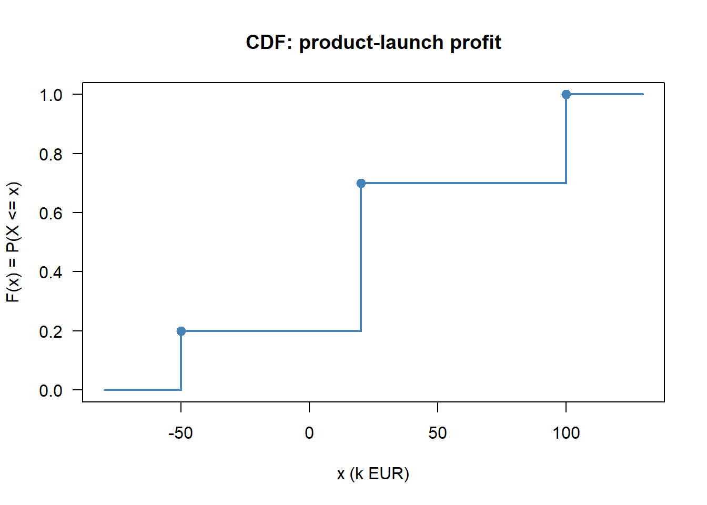
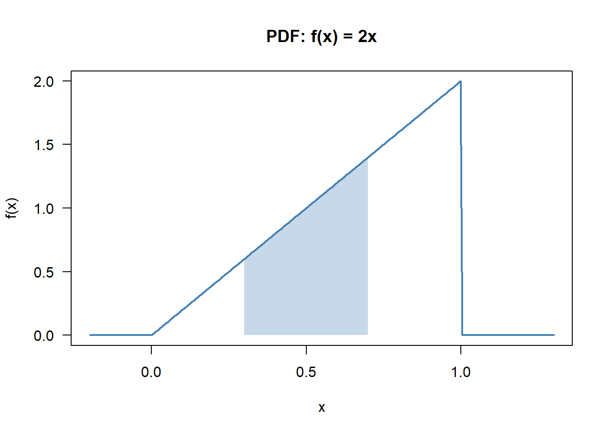
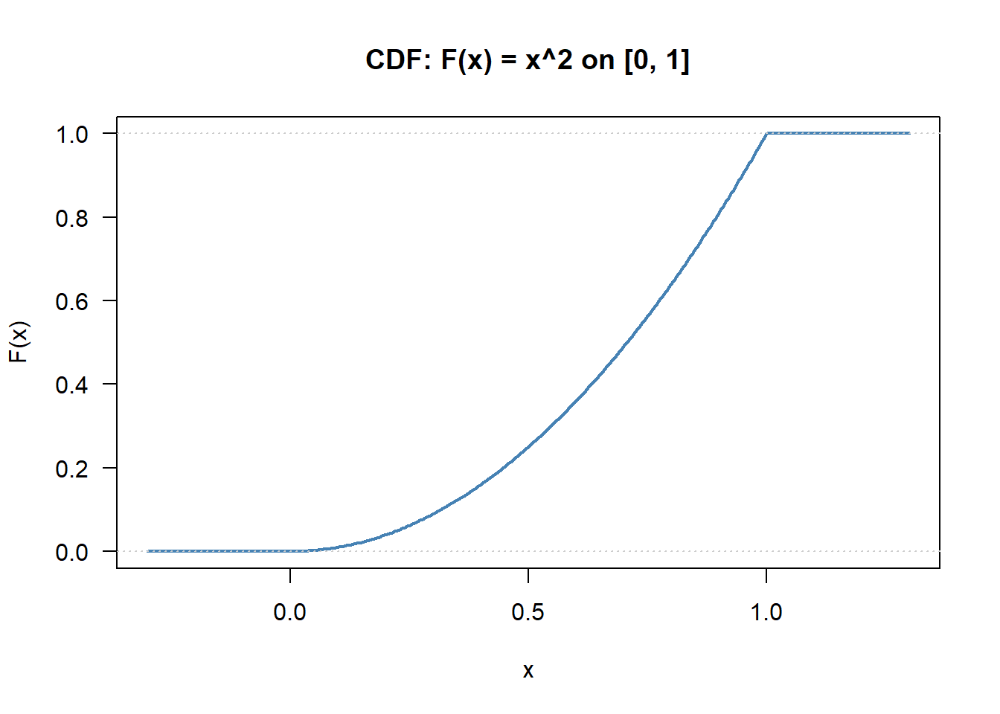

Code
set.seed(2026)
# No special packages required: base R only.Status: ported 2026-05-19. Reviewed by editor: pending.
By the end of this chapter the reader should be able to:
A startup considering a new product launch faces three scenarios — moderate gain, large gain, or loss. What is its expected profit, and how risky is the venture?
In Topic 3 we built the language of probability around abstract sample spaces. In practice, almost every business or economic question is numerical: how much profit, how many customers, what return? A random variable is the formal device that turns an abstract experiment into a real-valued quantity we can integrate, differentiate, and average. The running example throughout this chapter is the product-launch profit \(X\), with three outcomes \(-50\), \(20\), \(100\) (thousands of euros) and probabilities \(0.20\), \(0.50\), \(0.30\) — concrete enough to compute, rich enough to illustrate every definition.
In Topic 3 the elements of \(\Omega\) could be anything — heads/tails, defective/non-defective, expansion/contraction. The full machinery of calculus and algebra only becomes available once outcomes are numbers.
A random variable is a function \(X\colon \Omega \to \mathbb{R}\) that assigns a real number \(X(\omega)\) to every outcome \(\omega \in \Omega\).
By convention, random variables are written with uppercase letters (\(X, Y, Z\)) and their realisations with the matching lowercase letters (\(x, y, z\)). Thus \(X\) is the (still uncertain) variable, while \(x\) is a value it may take.
Toss a fair coin twice. The sample space is \(\Omega = \{HH, HT, TH, TT\}\). Define \(X =\) number of heads. Then \(X(TT) = 0\), \(X(HT) = X(TH) = 1\), \(X(HH) = 2\), and the distribution of \(X\) is \(P(X = 0) = 1/4\), \(P(X = 1) = 1/2\), \(P(X = 2) = 1/4\).
A random variable \(X\) is discrete if it takes only a finite or countably infinite number of values \(x_1, x_2, \ldots\). The probability is concentrated on isolated points.
A random variable \(X\) is continuous if it takes any value in one or more intervals of \(\mathbb{R}\). Its probability is described by a density, and the probability of any single point is zero.
Economic examples help:
The probability mass function of a discrete random variable \(X\) is \(p(x_i) = P(X = x_i)\) for \(i = 1, 2, \ldots\)
A PMF is valid if and only if
\[ p(x_i) \geq 0 \text{ for every } i, \qquad \sum_{i} p(x_i) = 1. \]
The collection of pairs \(\{(x_i, p(x_i))\}\) is the probability distribution of \(X\). For the two-coin-toss example, the PMF is \(p(0) = 1/4\), \(p(1) = 1/2\), \(p(2) = 1/4\), and \(1/4 + 1/2 + 1/4 = 1\) as required.
The cumulative distribution function (CDF) is defined for every random variable — discrete, continuous, or mixed — and is often the most convenient single object to work with.
The cumulative distribution function of a random variable \(X\) is \(F_X(x) = P(X \leq x)\) for \(x \in \mathbb{R}\).
The CDF is the probability of falling at or below \(x\).
For any random variable \(X\), the CDF \(F_X\) satisfies:
The shape of \(F_X\) reveals the kind of variable:
For \(X =\) number of heads in two tosses,
\[ F_X(x) = \begin{cases} 0 & x < 0,\\ 1/4 & 0 \leq x < 1,\\ 3/4 & 1 \leq x < 2,\\ 1 & x \geq 2. \end{cases} \]
Probabilities of intervals are then trivial: \(P(0 < X \leq 1) = F_X(1) - F_X(0) = 3/4 - 1/4 = 1/2\).
For a continuous random variable we cannot assign positive probability to individual points — there are uncountably many of them, and the probabilities would not sum to one. Probabilities are described instead by a density.
A function \(f_X(x)\) is a probability density function of a continuous random variable \(X\) if
\[ f_X(x) \geq 0 \text{ for all } x, \qquad \int_{-\infty}^{\infty} f_X(x)\,dx = 1. \]
Probabilities are computed as areas under the curve:
\[ P(a \leq X \leq b) = \int_a^b f_X(x)\,dx. \]
The PDF and CDF of a continuous variable are linked by the fundamental theorem of calculus:
\[ F_X(x) = \int_{-\infty}^{x} f_X(t)\,dt, \qquad f_X(x) = F_X'(x). \]
For any continuous \(X\) and any value \(a\), \(P(X = a) = \int_a^a f_X(x)\,dx = 0\). Therefore the inclusion or exclusion of endpoints is irrelevant: \(P(a \leq X \leq b) = P(a < X < b) = P(a \leq X < b) = P(a < X \leq b)\). (For discrete \(X\), by contrast, \(P(X = a)\) can be positive and the endpoint matters.)
Take \(f_X(x) = 2x\) for \(0 \leq x \leq 1\), zero elsewhere. Validity: \(f_X \geq 0\) and \(\int_0^1 2x\,dx = [x^2]_0^1 = 1\), both check. Interval probability: \(P(0.3 \leq X \leq 0.7) = \int_{0.3}^{0.7} 2x\,dx = [x^2]_{0.3}^{0.7} = 0.49 - 0.09 = 0.40\). CDF: \(F_X(x) = \int_0^x 2t\,dt = x^2\) for \(0 \leq x \leq 1\), with \(F_X(x) = 0\) for \(x < 0\) and \(F_X(x) = 1\) for \(x > 1\). Check: \(F_X(0.7) - F_X(0.3) = 0.49 - 0.09 = 0.40\), matching the direct integral.
| Feature | Discrete | Continuous |
|---|---|---|
| Values | countable set | interval(s) of \(\mathbb{R}\) |
| Probability described by | PMF \(p(x_i) = P(X = x_i)\) | PDF \(f_X(x) \geq 0\) |
| \(P(X = a)\) | can be \(> 0\) | always \(= 0\) |
| \(P(a \leq X \leq b)\) | \(\sum_{a \leq x_i \leq b} p(x_i)\) | \(\int_a^b f_X(x)\,dx\) |
| CDF shape | step function | smooth curve |
The expected value of \(X\) is the probabilistic analogue of the sample mean from Topic 1. It is the long-run average value of \(X\) over infinitely many repetitions of the experiment — physically, the centre of gravity (balance point) of the probability distribution.
The expected value of a random variable \(X\), denoted \(\mathbb{E}[X]\) or \(\mu\), is
\[ \mu = \mathbb{E}[X] = \sum_{i} x_i\, p(x_i) \quad \text{(discrete)}, \qquad \mu = \mathbb{E}[X] = \int_{-\infty}^{\infty} x\, f_X(x)\,dx \quad \text{(continuous)}. \]
For \(X =\) number of heads in two fair tosses,
\(\mathbb{E}[X] = 0 \cdot \tfrac{1}{4} + 1 \cdot \tfrac{1}{2} + 2 \cdot \tfrac{1}{4} = 1\).
On average we expect one head in two tosses — consistent with intuition.
For the density \(f_X(x) = 2x\) on \([0, 1]\),
\(\mathbb{E}[X] = \int_0^1 x \cdot 2x\,dx = \int_0^1 2x^2\,dx = \tfrac{2}{3}\).
The mean sits above \(1/2\) because the density places more mass near \(x = 1\).
For any (measurable) function \(g\), the expected value of \(g(X)\) is computed by weighting \(g(x)\) by the probability mass or density at \(x\):
\[ \mathbb{E}[g(X)] = \sum_i g(x_i)\, p(x_i) \quad \text{(discrete)}, \qquad \mathbb{E}[g(X)] = \int g(x) f_X(x)\,dx \quad \text{(continuous)}. \]
The most-used case is \(g(x) = x^2\), which gives the second moment \(\mathbb{E}[X^2]\) — the building block of variance below.
For any constants \(a, b\) and any random variable \(X\),
\[ \mathbb{E}[a + bX] = a + b\,\mathbb{E}[X]. \]
This identity is fundamental: it requires no assumption on the distribution of \(X\). It also extends to sums of random variables, \(\mathbb{E}[X + Y] = \mathbb{E}[X] + \mathbb{E}[Y]\), even when \(X\) and \(Y\) are dependent (a fact we will exploit in Topic 5 for sums of Bernoulli indicators).
Suppose the daily number of textbooks sold \(X\) has \(\mathbb{E}[X] = 1.95\). Each book is sold for 25 euros, with daily fixed cost 30 euros, so daily profit is \(Y = 25 X - 30\). Then \(\mathbb{E}[Y] = 25 \cdot 1.95 - 30 = 18.75\) euros.
The expected value locates the centre of the distribution; the variance measures how far values typically fall from that centre.
The variance of \(X\) is
\[ \sigma^2 = \operatorname{Var}(X) = \mathbb{E}\!\left[(X - \mu)^2\right] = \mathbb{E}[X^2] - \mu^2, \]
and the standard deviation is \(\sigma = \sqrt{\sigma^2}\), expressed in the same units as \(X\).
Explicitly:
\[ \sigma^2 = \sum_i (x_i - \mu)^2\, p(x_i) = \sum_i x_i^2\, p(x_i) - \mu^2 \quad \text{(discrete)}, \]
\[ \sigma^2 = \int_{-\infty}^{\infty} (x - \mu)^2 f_X(x)\,dx = \int_{-\infty}^{\infty} x^2 f_X(x)\,dx - \mu^2 \quad \text{(continuous)}. \]
The shortcut formula is \(\operatorname{Var}(X) = \mathbb{E}[X^2] - (\mathbb{E}[X])^2\) — the mean of the squares minus the square of the mean. Swapping these terms gives a negative number and a tell-tale sign that something has gone wrong. Use \(S^2\) in Topic 1 as a memory anchor: same structure, sample analogues.
For any random variable \(X\) with \(\operatorname{Var}(X) = \sigma^2\) and any constants \(a, b\):
A tyre factory inspects batches of three. Let \(X\) count the defective tyres in a batch, with PMF \(p(0) = 0.70\), \(p(1) = 0.20\), \(p(2) = 0.08\), \(p(3) = 0.02\). Then \(\mathbb{E}[X] = 0.42\), \(\mathbb{E}[X^2] = 0.70\), so \(\operatorname{Var}(X) = 0.70 - 0.42^2 = 0.5236\) and \(\sigma = \sqrt{0.5236} \approx 0.724\).
We already have \(\mathbb{E}[X] = 2/3\) for the density \(f_X(x) = 2x\). Compute \(\mathbb{E}[X^2] = \int_0^1 x^2 \cdot 2x\,dx = \int_0^1 2x^3\,dx = 1/2\). Hence \(\operatorname{Var}(X) = 1/2 - (2/3)^2 = 1/2 - 4/9 = 1/18 \approx 0.0556\), and \(\sigma = 1/(3\sqrt{2}) \approx 0.236\).
In Topic 1 we computed sample statistics from observed data. We are now working with population parameters defined by a probability model. The correspondence is the standard Latin–Greek bridge:
| Concept | Sample (Topic 1) | Population (Topic 4) |
|---|---|---|
| Mean | \(\bar{x}\) | \(\mu = \mathbb{E}[X]\) |
| Variance | \(S^2\) | \(\sigma^2 = \operatorname{Var}(X)\) |
| Standard deviation | \(S\) | \(\sigma\) |
| Correlation | \(r\) | \(\rho\) |
In all of inferential statistics, the central question is how well a sample statistic estimates the corresponding population parameter — a story for TC2 / Econometrics I, not for this book.
A useful operation, used everywhere in Topic 5, is to centre and scale a random variable so that it has mean zero and variance one.
The standardised version of a random variable \(X\) with mean \(\mu\) and standard deviation \(\sigma > 0\) is
\[ Z = \frac{X - \mu}{\sigma}. \]
By the linearity of expectation and the scaling rule for variance,
\[ \mathbb{E}[Z] = \frac{\mathbb{E}[X] - \mu}{\sigma} = 0, \qquad \operatorname{Var}(Z) = \frac{1}{\sigma^2}\operatorname{Var}(X) = 1. \]
A value of \(Z\) measures how many standard deviations \(X\) is away from its mean. Topic 5 introduces the standard normal distribution (a particular continuous \(Z\) with mean \(0\), variance \(1\), and bell-shaped density) and the table of its CDF \(\Phi(z)\) — but standardisation itself is a purely mechanical operation, available for any variable with finite variance.
How likely is it that \(X\) lies far from its mean? Without knowing the shape of the distribution, we can still give a universal answer in terms of the standard deviation.
For any random variable \(X\) with mean \(\mu\) and finite variance \(\sigma^2\), and for any \(k > 0\),
\[ P(|X - \mu| \geq k\sigma) \leq \frac{1}{k^2}, \]
equivalently,
\[ P(\mu - k\sigma \leq X \leq \mu + k\sigma) \geq 1 - \frac{1}{k^2}. \]
In words: regardless of distribution shape, at least a fraction \(1 - 1/k^2\) of the probability lies within \(k\) standard deviations of the mean.
A fund has expected return \(\mu = 8\%\) and \(\sigma = 6\%\). With no assumption about the distribution: \(P(-4\% \leq X \leq 20\%) \geq 1 - 1/4 = 0.75\) (taking \(k = 2\)); \(P(-10\% \leq X \leq 26\%) \geq 1 - 1/9 \approx 0.889\) (taking \(k = 3\)). If we want at least 95% probability, we need \(1 - 1/k^2 \geq 0.95\), i.e. \(k \geq \sqrt{20} \approx 4.47\), giving the wide interval \(8\% \pm 26.8\%\).
Chebyshev makes no assumption about the distribution. The price is that the bound is typically very conservative. Under normality (Topic 5), \(P(|X - \mu| \leq 2\sigma) \approx 0.954\), far above the Chebyshev lower bound of \(0.75\). Use Chebyshev when the distribution is unknown; use distribution-specific tables when it is known.
This lab walks through the running product-launch example (discrete) and the density \(f_X(x) = 2x\) (continuous): plotting the PMF/PDF and CDF, and computing the mean and variance directly from the definitions.
set.seed(2026)
# No special packages required: base R only.outcomes <- c(-50, 20, 100) # profit in thousands of euros
probs <- c(0.20, 0.50, 0.30)
pmf <- data.frame(x = outcomes, p = probs)
knitr::kable(pmf, caption = "PMF of product-launch profit (k EUR)")| x | p |
|---|---|
| -50 | 0.2 |
| 20 | 0.5 |
| 100 | 0.3 |
barplot(probs, names.arg = outcomes, col = "steelblue",
xlab = "Profit (k EUR)", ylab = "P(X = x)",
main = "PMF: product-launch profit", las = 1, ylim = c(0, 0.6))
EX <- sum(outcomes * probs)
EX2 <- sum(outcomes^2 * probs)
VarX <- EX2 - EX^2
SDX <- sqrt(VarX)
cat("E[X] =", EX, "k EUR\n")E[X] = 30 k EURcat("E[X^2]=", EX2, "\n")E[X^2]= 3700 cat("Var(X)=", VarX, "\n")Var(X)= 2800 cat("SD(X) =", round(SDX, 2), "k EUR\n")SD(X) = 52.92 k EURThe expected profit is 30k EUR but the standard deviation is roughly 48k EUR — larger than the mean itself, which signals a risky venture.
cum_probs <- cumsum(probs)
cdf <- data.frame(x = outcomes, F_x = cum_probs)
knitr::kable(cdf, caption = "CDF values (jumps of the step function)")| x | F_x |
|---|---|
| -50 | 0.2 |
| 20 | 0.7 |
| 100 | 1.0 |
# Hand-built step plot
x_plot <- c(-80, outcomes[1], outcomes[1], outcomes[2],
outcomes[2], outcomes[3], outcomes[3], 130)
y_plot <- c(0, 0, cum_probs[1], cum_probs[1],
cum_probs[2], cum_probs[2], cum_probs[3], cum_probs[3])
plot(x_plot, y_plot, type = "l", col = "steelblue", lwd = 2,
xlab = "x (k EUR)", ylab = "F(x) = P(X <= x)",
main = "CDF: product-launch profit", las = 1, ylim = c(0, 1))
points(outcomes, cum_probs, pch = 19, col = "steelblue", cex = 1.2)
We can read off \(P(X \leq 20) = 0.70\): a 70% chance that profit does not exceed 20k EUR.
f <- function(x) ifelse(x >= 0 & x <= 1, 2 * x, 0)
total <- integrate(f, 0, 1)$value
cat("Integral of f from 0 to 1:", total, "(should be 1)\n")Integral of f from 0 to 1: 1 (should be 1)curve(f, from = -0.2, to = 1.3, n = 300, col = "steelblue", lwd = 2,
xlab = "x", ylab = "f(x)", main = "PDF: f(x) = 2x", las = 1)
x_shade <- seq(0.3, 0.7, length.out = 100)
polygon(c(0.3, x_shade, 0.7), c(0, f(x_shade), 0),
col = rgb(0.27, 0.51, 0.71, 0.3), border = NA)
p_mid <- integrate(f, 0.3, 0.7)$value
EX_c <- integrate(function(x) x * f(x), 0, 1)$value
EX2_c <- integrate(function(x) x^2 * f(x), 0, 1)$value
VarX_c <- EX2_c - EX_c^2
cat("P(0.3 <= X <= 0.7) =", round(p_mid, 4), "\n")P(0.3 <= X <= 0.7) = 0.4 cat("E[X] =", round(EX_c, 4), " (theory: 2/3)\n")E[X] = 0.6667 (theory: 2/3)cat("Var(X) =", round(VarX_c, 4), " (theory: 1/18)\n")Var(X) = 0.0556 (theory: 1/18)F_cdf <- function(x) ifelse(x < 0, 0, ifelse(x > 1, 1, x^2))
curve(F_cdf, from = -0.3, to = 1.3, n = 300, col = "steelblue", lwd = 2,
xlab = "x", ylab = "F(x)", main = "CDF: F(x) = x^2 on [0, 1]", las = 1)
abline(h = c(0, 1), col = "grey80", lty = 3)
By the fundamental theorem of calculus, \(F_X(0.7) - F_X(0.3) = 0.49 - 0.09 = 0.40\) matches the direct integral.
# Discrete product-launch variable: use Chebyshev to bound P(|X - mu| < k*sigma)
mu_X <- EX
sd_X <- SDX
k_vals <- c(1, 2, 3, 4)
lower_bound <- 1 - 1/k_vals^2
data.frame(k = k_vals,
interval_lo = round(mu_X - k_vals * sd_X, 1),
interval_hi = round(mu_X + k_vals * sd_X, 1),
Cheb_lower = round(lower_bound, 3)) k interval_lo interval_hi Cheb_lower
1 1 -22.9 82.9 0.000
2 2 -75.8 135.8 0.750
3 3 -128.7 188.7 0.889
4 4 -181.7 241.7 0.938For our product launch, Chebyshev guarantees that with probability at least 0.75 the profit lies within \(\mu \pm 2\sigma\), i.e. between \(-65.6\) and \(125.6\) thousand euros — a wide and very conservative band, but distribution-free.
A function \(p(x)\) is a valid probability mass function for a discrete random variable if and only if:
Answer: B. Non-negativity plus probabilities summing to one. Strict positivity in A is too strong (zero is allowed); C is the PDF condition; D is the CDF, not the PMF.
The cumulative distribution function \(F_X(x) = P(X \leq x)\) of a discrete random variable is:
Answer: A. The CDF accumulates probability and jumps by exactly \(p(x_i)\) at each support point. It is flat between jumps and is right-continuous at each jump.
For a continuous random variable \(X\) and any specific value \(x_0\), \(P(X = x_0)\) equals:
Answer: C. Because \(\int_{x_0}^{x_0} f_X = 0\). The density value \(f_X(x_0)\) is not a probability; it has units of probability per unit of \(x\).
If \(f_X(x) = 2x\) on \([0, 1]\) (and zero elsewhere), then \(P(X \leq 0.5)\) equals:
Answer: B. \(P(X \leq 0.5) = \int_0^{0.5} 2x\,dx = 0.25\). Most of the mass lies above \(0.5\) because the density is increasing.
The variance of a random variable can always be written as:
Answer: A. The mean of the squares minus the square of the mean. Option D has the sign reversed and would be non-positive.
If \(\mathbb{E}[X] = 50\) and \(\operatorname{Var}(X) = 4\), and \(Y = 200 + 10 X\), then:
Answer: B. \(\mathbb{E}[Y] = 200 + 10 \cdot 50 = 700\) by linearity; \(\operatorname{Var}(Y) = 10^2 \cdot 4 = 400\) because the constant 200 does not affect the variance and the multiplier 10 enters squared.
If \(Z = (X - \mu)/\sigma\) is the standardised version of \(X\), then:
Answer: B. Linearity of expectation gives \(\mathbb{E}[Z] = 0\), and the variance scaling rule gives \(\operatorname{Var}(Z) = 1\). Option C is a common confusion: standardisation centres and scales but does not change the shape of the distribution.
A variable has \(\mu = 500\), \(\sigma = 40\). By Chebyshev, the minimum probability that \(X\) falls in the interval \((380, 620)\) is at least:
Answer: C. The interval is \(\mu \pm 3\sigma\), so \(k = 3\) and the lower bound is \(1 - 1/9 = 8/9 \approx 0.889\).
A small consulting firm receives \(X\) client enquiries per day. The proposed PMF is
| \(x\) | 0 | 1 | 2 | 3 | 4 |
|---|---|---|---|---|---|
| \(P(X = x)\) | 0.10 | 0.25 | 0.35 | 0.20 | \(k\) |
Probabilities must sum to one: \(0.10 + 0.25 + 0.35 + 0.20 + k = 1\), so \(k = 0.10\).
\(\mathbb{E}[X] = 0(0.10) + 1(0.25) + 2(0.35) + 3(0.20) + 4(0.10) = 0.25 + 0.70 + 0.60 + 0.40 = 1.95\).
\(P(X \geq 2) = 0.35 + 0.20 + 0.10 = 0.65\).
Using the PMF from Exercise 4.1 (with \(k = 0.10\)):
\(\mathbb{E}[X^2] = 0 + 0.25 + 4(0.35) + 9(0.20) + 16(0.10) = 0.25 + 1.40 + 1.80 + 1.60 = 5.05\).
\(\operatorname{Var}(X) = 5.05 - 1.95^2 = 5.05 - 3.8025 = 1.2475\).
\(\sigma = \sqrt{1.2475} \approx 1.117\).
A discrete random variable \(X\) has CDF
\[ F_X(x) = \begin{cases} 0 & x < 1,\\ 0.15 & 1 \leq x < 3,\\ 0.40 & 3 \leq x < 5,\\ 0.75 & 5 \leq x < 7,\\ 1 & x \geq 7. \end{cases} \]
The time \(X\) (in hours) a customer spends in a shopping centre has PDF \(f_X(x) = c\,x(4 - x)\) on \([0, 4]\), zero elsewhere.
The monthly electricity bill \(X\) (in euros) of a household has \(\mathbb{E}[X] = 85\) and \(\operatorname{Var}(X) = 225\). A government subsidy transforms the bill to \(Y = 0.80\,X - 10\).
The weekly profit \(X\) (in thousands of euros) of a small online retailer has
\[ f_X(x) = \begin{cases} \tfrac{1}{18}(6 - x) & 0 \leq x \leq 6,\\ 0 & \text{otherwise.}\end{cases} \]
The daily number of online orders \(X\) at a warehouse has \(\mathbb{E}[X] = 500\) and \(\sigma = 40\).
A financial analyst models the monthly return \(R\) (in %) of a stock as a continuous variable on \([-10, 10]\) with PDF \(f_R(r) = \tfrac{3}{4000}(100 - r^2)\).